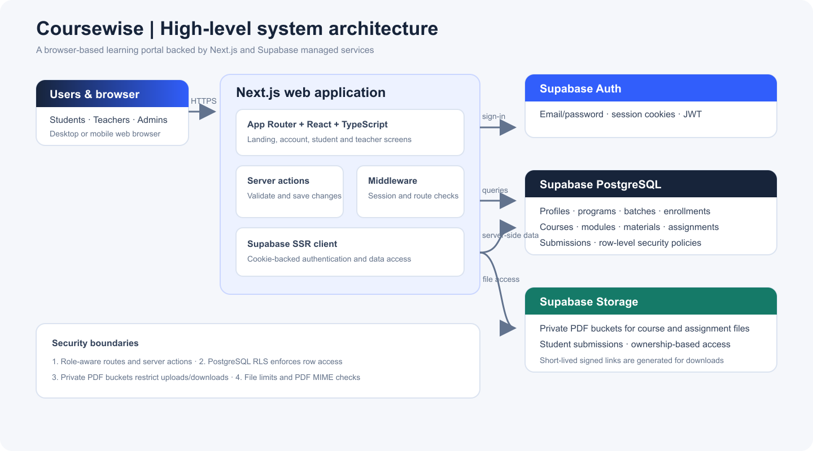
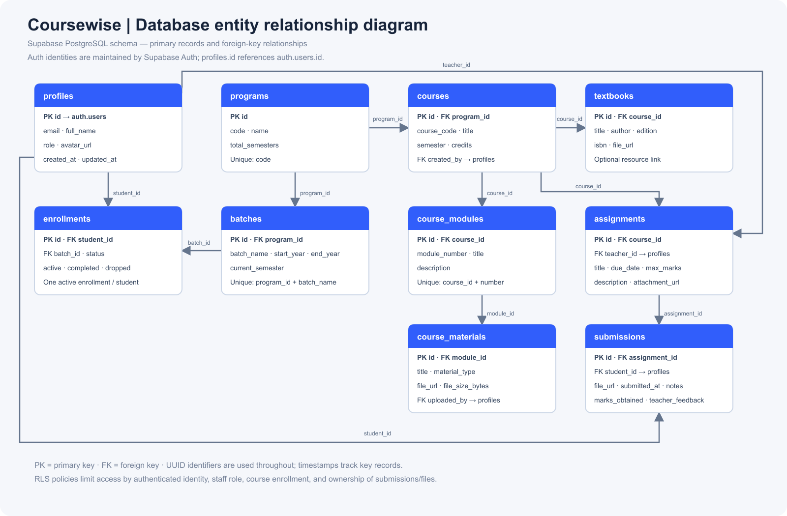
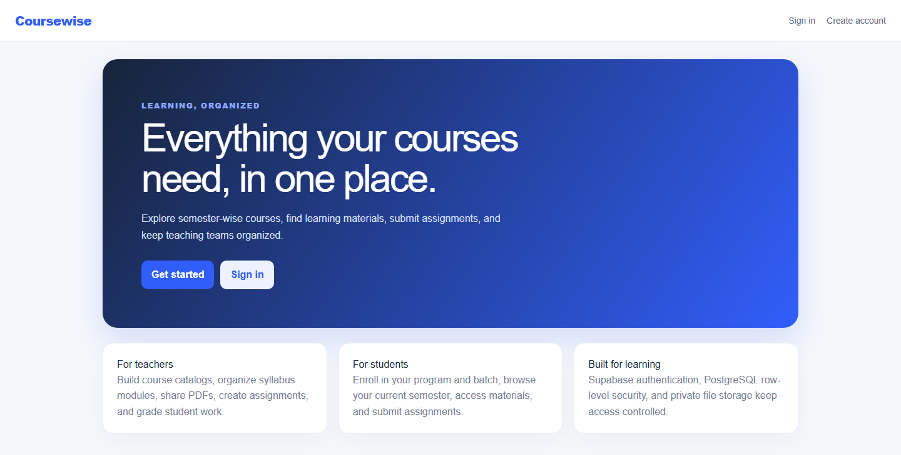
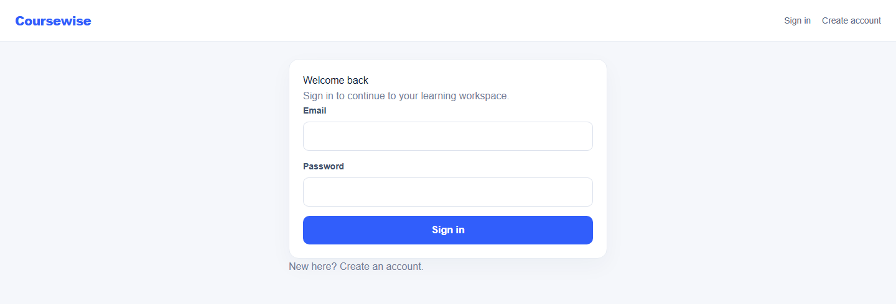

This is to certify that this is a bona fide record of the work done by Amisha Gurubaxani, bearing enrolment number A809150825057, in the Bachelor of Computer Application (Hons./Hons. with Research), Semester 3, from Amity Institute of Information Technology (AIIT), Amity University Chhattisgarh, in the Software Engineering Lab with Course Code CBCA40303.
University examination held on: __________________________________________
Coursewise is a role-based course management web application for organizing teaching and learning activities in one place. It provides separate student and teacher workspaces and connects course information, semester structure, study resources, assignment submissions, and grading feedback.
1.1 Problem statement
In a conventional classroom workflow, course outlines, PDFs, recommended books, assignment instructions, deadlines, submitted work, and grades may be distributed through disconnected channels. Students can struggle to locate the correct material for their program and semester, while teachers repeat administrative work and may lack a consistent view of submissions and feedback. These fragmented processes make course information harder to find and progress harder to follow.
1.2 Aim and objectives
Provide one web portal for semester-based course information and learning resources.
Give students a clear way to find courses and assignments for their enrolled program and batch.
Let teachers publish course content, set assignment deadlines, and review and grade submitted work.
Protect student, course, and file access with authenticated roles and database/storage policies.
1.3 Proposed solution and scope
The solution is Coursewise: a browser application with a Next.js interface and Supabase services for authentication, PostgreSQL data, and private PDF storage. Student registration records a program-batch enrollment. Teachers can create program courses, organize modules, upload PDF resources, add textbook details, and create assignments. Students can browse courses by semester, download permitted resources, submit PDFs, and view grading status and feedback.
The current repository implements student and teacher workflows and database support for an admin role. It does not provide a dedicated admin-management interface, institutional identity verification, notifications, or measured usage/performance outcomes; these are possible future improvements.
2. Methodology Used
The project follows a requirement-driven, iterative software development approach. Core user problems were translated into role-based workflows, then the data model, interface routes, server actions, and access rules were implemented together. Each feature is organized around a real task (for example, publishing a course, finding a semester assignment, or grading a submission), allowing the interface and database rules to stay aligned.
2.1 Development stages
Requirement analysis: identify student and teacher needs, semester/program organization, and file-based course work.
System design: define the Next.js/Supabase architecture, relational entities, role boundaries, and private storage buckets.
Implementation: build App Router pages and React components, server actions, Supabase queries, SQL migrations, triggers, and row-level security policies.
Verification: run the application locally, inspect the real landing and sign-in screens, and review route, data, and storage policies against the intended workflows.
2.2 Technology stack
Next.js App Router and React with TypeScript for server-rendered pages, client-side forms, and server actions.
Tailwind CSS and project CSS for responsive layouts and shared visual styling.
Supabase Auth for email/password identity and session management.
Supabase PostgreSQL for structured academic records, integrity constraints, database functions, triggers, and row-level security (RLS).
Supabase Storage for private PDF buckets and access-controlled file delivery.
SQL migration files and seed data for repeatable database setup.
2.3 Main roles
Student: registers against a program and batch; views course materials and assignments; submits work and checks grades/feedback.
Teacher: manages course content and assignments, views submissions, and records marks and feedback.
Admin: supported by role-aware server/database policies for selected staff functions, but a separate admin portal is not included.
3. System Architecture
The browser communicates with a Next.js App Router application. Server components load authenticated data; server actions validate and write user changes. The Supabase server client manages cookie-backed sessions and calls Auth, PostgreSQL, and Storage. Middleware checks signed-in portal access and role. PostgreSQL RLS and Storage policies provide an additional authorization boundary, so access is not based only on what the interface displays.
3.1 Request and data flow
A user opens the web portal and signs in with an email and password through Supabase Auth.
The authenticated session is carried in cookies; middleware routes users to the appropriate student or teacher workspace.
The page/server action queries or updates PostgreSQL. Database RLS policies check the current identity, role, enrollment, and record ownership.
PDF uploads go to private Supabase Storage buckets. The application stores the object path in PostgreSQL and produces short-lived signed download links when access is allowed.
3.2 Security and access design
Portal routes are protected by middleware; server actions also require appropriate roles for staff-only operations.
RLS policies limit student course visibility to the student's program and current batch-semester rules and restrict submissions to their owner.
Submission triggers prevent students from setting grades or feedback and prevent teachers from changing student file/ownership fields while grading.
Storage buckets are private and accept PDF MIME types with configured size limits. Course resources and submissions use per-user object paths.
Download links are signed and time-limited (10 minutes in the application helper). Production deployments should keep RLS enabled and never expose a service-role key to the browser.

Figure 1. Coursewise application and Supabase service architecture.
4. Database Design
The data model is relational and uses UUID primary keys. Foreign keys connect programs to batches and courses, courses to modules, materials, textbooks and assignments, and assignments to student submissions. Supabase Auth owns login identities; the profiles table extends each identity with the app role and display information.

Figure 2. Main Coursewise database entities and relationships. Auth identities are managed by Supabase Auth.
4.1 Core entities
profiles: user identity reference, email, full name, role, and optional avatar.
programs and batches: degree/program metadata and its cohorts, year range, and current semester.
enrollments: student-to-batch membership and active/completed/dropped status; a partial unique index allows one active enrollment per student.
courses: program-specific code, title, semester, credits, and creator.
course_modules and course_materials: ordered syllabus modules and attached PDF learning resources.
assignments: course, teacher, title, due date, maximum marks, instructions, and optional attachment.
submissions: one student submission per assignment, submitted file/notes, marks, feedback, and grading timestamp.
4.2 Integrity and access rules
Constraints protect unique program/course/module codes, valid semester ranges, positive credits/marks, and one submission per student-assignment pair. Triggers create the profile and student enrollment after signup, protect roles from user self-editing, validate submission ownership, and support module reordering. RLS policies separate public program/batch lookup from authenticated course access and staff-only management. The five migration files in supabase/migrations/ are applied in filename order; supabase/seed.sql inserts sample BCA, B.Tech CSE, and B.Tech IT programs and batches.
5. Features
5.1 Student features
Student registration with program and batch selection; account profile and enrollment are created by the database signup trigger.
Student dashboard summarizing available current-semester courses and upcoming assignments.
Semester course browsing, including an all-semesters filter; each course shows its code, credits, modules, materials, and recommended textbooks.
PDF downloads through signed links and assignment list/status views with deadline information.
PDF assignment submission with optional notes, resubmission before grading where permitted, and status/grade/feedback visibility.
5.2 Teacher features
Teacher dashboard counts for courses, created assignments, and submissions, with quick links to course and assignment tasks.
Create and filter courses by program and semester; organize modules and move them up or down.
Upload course PDFs, recommend textbooks, and create assignments with due dates, maximum marks, instructions, and optional PDF attachments.
Review assignment submissions, download student work, and record marks and feedback.
5.3 Platform and security features
Role-based navigation and protected student/teacher routes.
PostgreSQL RLS, integrity constraints, triggers, private storage buckets, PDF-only upload checks, and signed download URLs.
Responsive page layout and shared navigation/components for common workflows.
6. Procedure
6.1 Local installation and configuration
Install Node.js and npm, then open a terminal in the project folder.
Run npm install to install the dependencies listed in package.json.
Create a Supabase project. In its SQL editor, run every file in supabase/migrations/ in filename order, then run supabase/seed.sql.
Copy .env.example to .env and set NEXT_PUBLIC_SUPABASE_URL and NEXT_PUBLIC_SUPABASE_ANON_KEY to the project URL and publishable/anon key. Do not use a service-role key in client-exposed variables.
In Supabase Auth, set the local site URL to http://localhost:3000 and enable email/password sign-in. Configure SMTP/email confirmation, or disable email confirmation for a local-only demonstration.
Start the web application with npm run dev and visit http://localhost:3000.
6.2 Student workflow
Choose Create account, enter a name/email/password, select Student, then choose the correct program and batch.
Confirm the account if email confirmation is enabled, then sign in. The student is sent to the student dashboard.
Open Courses. The dashboard defaults to the current semester; use the semester selector to view another semester or all semesters.
Open a course to read its modules and download available PDF notes; review recommended textbook details/links.
Open Assignments, choose the relevant semester, and select an assignment to see instructions, due date, and any attachment.
Upload a PDF (20 MB maximum), optionally add student notes, and save the submission. Return to the assignment list/detail to check submission and grading status.
6.3 Teacher workflow
Create an account and choose Teacher, then sign in to the teacher workspace.
Open Courses and create a course with program, course code, title, semester, credits, and description.
Open the course to add syllabus modules, reorder them if needed, upload module PDFs (20 MB maximum), and add textbook details or an external resource link.
Create an assignment, select its course, provide a title/instructions, due date, maximum marks, and an optional PDF attachment.
Open the assignment submissions view, download student work, enter marks within the maximum, and save feedback.
Operational note: teacher self-registration is open in this project. A real institution should add an approval/verification process before relying on teacher roles.
7. Results and Benefits
7.1 Implementation result
The completed application provides a working public landing page and sign-in interface, role-aware student/teacher route structure, course and assignment workflows, a PostgreSQL schema with seed/migration scripts, and private PDF storage policies. The local application was started and the public landing and sign-in screens were captured for this report. Full authenticated workflows depend on a correctly configured Supabase project and test accounts; those were not available for this screenshot capture.
7.2 Benefits achieved
Centralization: students can find semester-aligned courses, materials, textbook recommendations, deadlines, submissions, and feedback from one portal.
Clear teaching workflow: teachers can maintain course structure and assignments and review work through a single role-specific workspace.
Improved traceability: due dates, submission timestamps, grades, and feedback are stored with the corresponding assignment and student.
Reduced manual coordination: database-backed enrollment and shared course records reduce reliance on repeated ad-hoc distribution of information.
Controlled access: role checks, RLS, private files, ownership rules, and signed URLs reduce unintended access to academic records and PDFs.
These are qualitative workflow benefits, not measured performance or time-saving claims. The repository contains no pilot study, user survey, or before/after metrics; those should be collected during a real deployment.
7.3 Platform screenshots

Figure 3. Coursewise public landing page (captured from the local running application).

Figure 4. Coursewise sign-in page (captured from the local running application).
8. Future Enhancements
Institutional administration: add an admin dashboard for teacher approval, enrollment management, semester progression, and course oversight.
Notifications: send email/in-app reminders for new assignments, approaching deadlines, submitted work, and released grades.
Richer assessment workflows: support more file formats where appropriate, rubric-based grading, draft states, late-submission rules, and audit history.
Accessibility and usability: conduct keyboard/screen-reader testing, improve empty/error states, and gather student/teacher feedback through a pilot.
Production readiness: add backup/restore procedures, observability, rate limits, email verification, retention policies, and deployment-specific redirect configuration.
Mobile experience: evaluate a progressive web app or dedicated mobile client while retaining the same authenticated backend and access rules.
9. Conclusion and References
Coursewise addresses the fragmentation of routine academic information by bringing program- and semester-based course content, PDF resources, assignments, submissions, and grading feedback into one web application. The project combines role-aware Next.js workflows with Supabase Auth, PostgreSQL RLS, and private Storage. The delivered foundation is suitable for a demonstration and further institutional pilot; teacher verification, operational measurement, and the proposed administrative/notification enhancements are important next steps.
References and project resources
README.md - local setup, Supabase configuration, storage, and deployment notes.
supabase/migrations/ - database schema, constraints, triggers, RLS policies, and later corrections.
supabase/seed.sql - example programs and batches.
app/actions.ts, middleware.ts, app/(dashboard)/, lib/portal-data.ts, and components/ - implemented workflows and role-aware UI.
Prepared for the Software Engineering Lab mini project. Product behaviour and schema descriptions are based on the Coursewise source code and Supabase migrations in this repository.